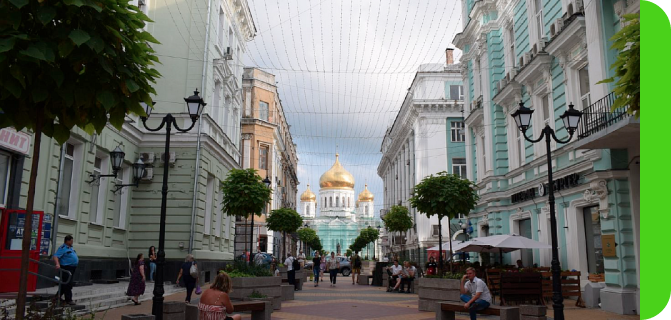
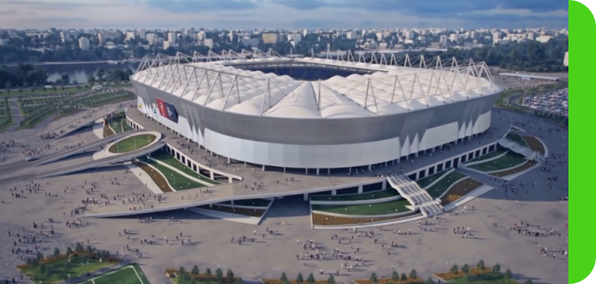
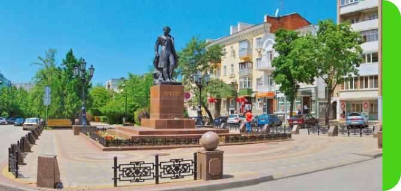
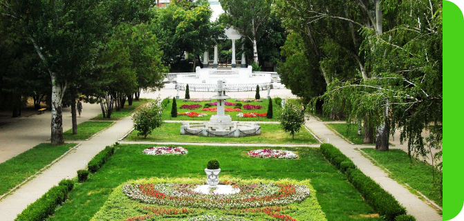

Привет, рады видеть тебя на сайте гида по Ростовской области!
Мы составим самый эффективный маршрут для прогулки
Physiological respiration involves the mechanisms that ensure that the composition of the functional residual capacity is kept constant, and equilibrates with the gases dissolved in the pulmonary capillary blood, and thus throughout the body.

Соборный переулок

Соборная площадь - самая старая городская площадь города Ростов-на-Дону, располагается между улицами Московской и Станиславского. Кафедральный Собор Рождества Пресвятой Богородицы - главное украшение Соборной площади и творение архитектора К.А.Тона, автора храма Христа Спасителя в Москве.

Левый берег Дона
Соборная площадь - самая старая городская площадь города Ростов-на-Дону, располагается между улицами Московской и Станиславского. Кафедральный Собор Рождества Пресвятой Богородицы - главное украшение Соборной площади и творение архитектора К.А.Тона, автора храма Христа Спасителя в Москве.

Пушкинская улица

Соборная площадь - самая старая городская площадь города Ростов-на-Дону, располагается между улицами Московской и Станиславского. Кафедральный Собор Рождества Пресвятой Богородицы - главное украшение Соборной площади и творение архитектора К.А.Тона, автора храма Христа Спасителя в Москве.

Парк им. М. Горького
Соборная площадь - самая старая городская площадь города Ростов-на-Дону, располагается между улицами Московской и Станиславского. Кафедральный Собор Рождества Пресвятой Богородицы - главное украшение Соборной площади и творение архитектора К.А.Тона, автора храма Христа Спасителя в Москве.
